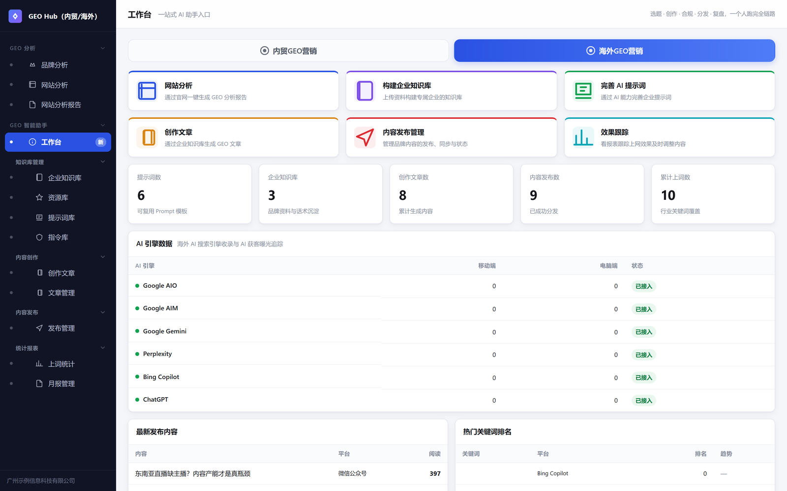
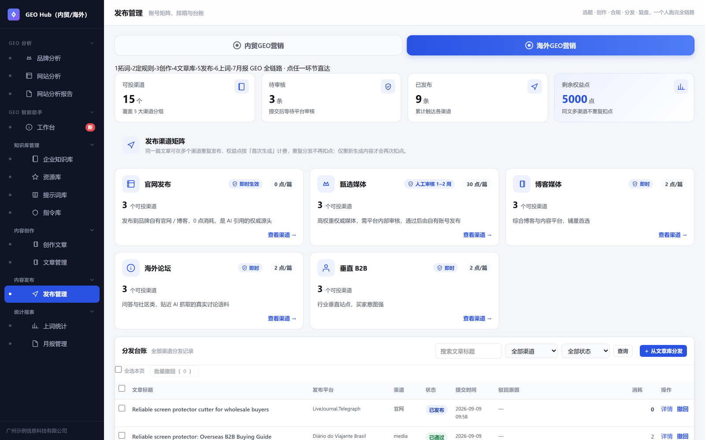
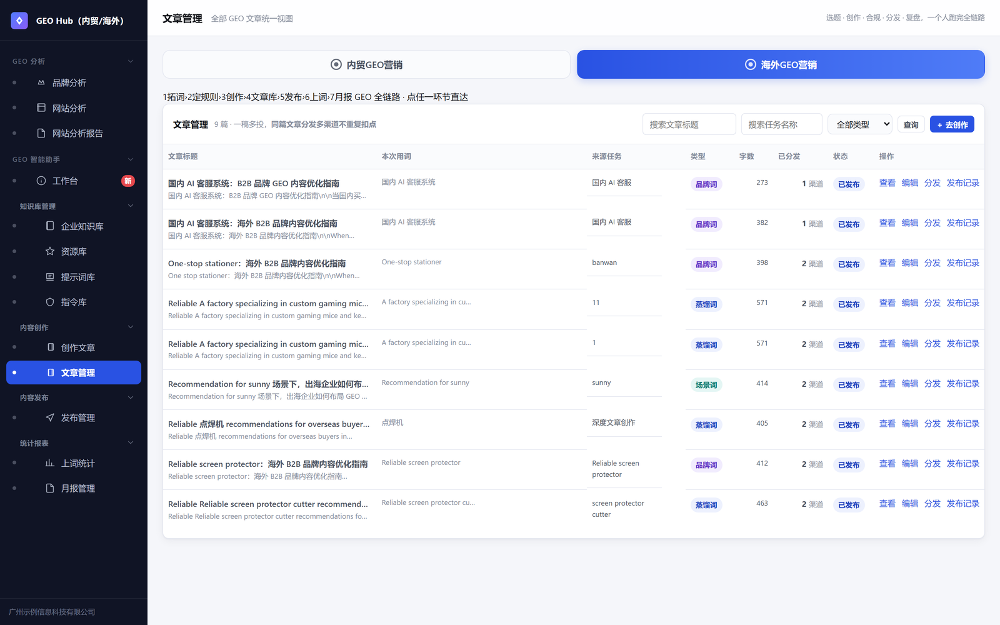
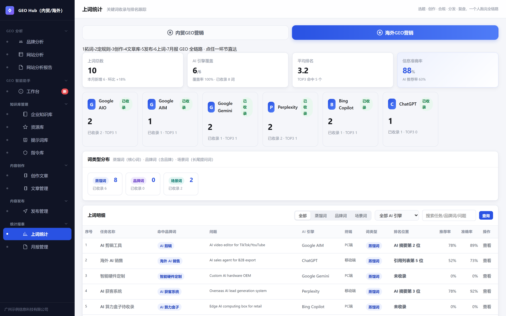

把被平台"罚出来"的实战经验固化成系统规则 —— 每一次内容生产都自带合规护栏，每一次分发都可跟踪、可复盘。

AI 引擎收录状态、发布与阅读趋势、热词排名一屏总览

官网 / 甄选媒体 / 博客 / 海外论坛 / 垂直 B2B 五大渠道矩阵，收益点体系防刷量

一稿多投不重复扣点，查看 · 编辑 · 分发 · 发布记录全流程操作

关键词在 AI 引擎的收录与排名跟踪，GEO 效果量化
P0/P1 分级规则引擎内置进创作流程。AI 生成声明、平台标识、来源规范在预检阶段拦截，而不是发布被删后才复盘。
同一文章多渠道分发的收益点权重去重，原生生成与计算生成区分计费，机制上防止刷量。
Google AIO / Gemini / Perplexity / Bing Copilot / ChatGPT 等引擎的收录状态与曝光趋势可视化 —— GEO 区别于 SEO 的核心指标。
同一套系统两种打法，区域级数据隔离，内贸 GEB 与海外 GEO 全链路各自独立。